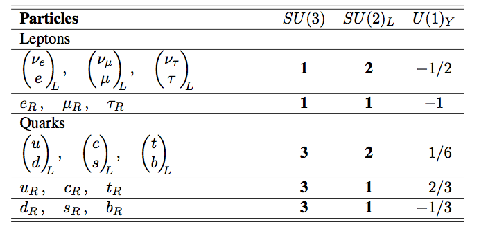

The mysteries of the neutrinos
Contents
The mysteries of the neutrinos#
import time
print(' Last version ', time.asctime() )
Last version Wed Jan 29 17:07:19 2025
About
These lectures are about some selected topics on Neutrino Physics.
They cover the relevance of the neutrino in the construction of the Standard Model, neutrino oscillations and double-beta decay searches.
Introduction#
Neutrinos
are the closest thing to nothing we have discovered.
played an important role in the construction of the Standard Model (SM)
have provided the only evidence of Physics Beyond the SM (BSM)
are unique: neutrinos are the only fundamental fermions that could be their own antiparticle.
Two major discoveries and one confirmation in the last decades:
Higgs discovery (ATLAS, CMS) pdg-review
Confirmation of the Cabibbo-Kobayashi-Maskawa Unitary Matrix (BaBar, Belle, LHCb, …), pdg-review
Discovery of the neutrino oscillations (Super-Kamiokande, SNO) pdg-review
The CKM and PMNS matrices are both rooted in Higgs physics: they arise from the Yukawa couplings of quarks and leptons to the Higgs field across three generations.
Neutrino oscillation simplified summary:
|

Fermions in the SM:
 |
Leptons in the SM:
Neutrinos in the SM:
they only interact weakly!
they are \(\nu_L\), left-chirality neutrinos, and \(\bar{\nu}_R\), right-chirality anti-neutrinos.
neutrinos are massless! There is no \(\nu_R\) to introduce a mass term in the Lagrangian:
Neutrinos interact only via the interaction Lagrangian, CC (\(W^\pm\)) or NC (\(Z\)):
where \(g_W\) is the weak constant and \(\theta_W\) the Weinberg angle.
The V-A structure is explicit in the interaction Lagrangian.
The lepton number in the SM is (accidentally) preserved.
Furthermore, flavour lepton number is also accidentally preserved: electron (\(L_e\)), muon (\(L_\mu\)) and tau (\(L_\tau\)).
Neutrinos in Nature#
But neutrinos in Nature:
they have no color, no electric charge, and a tiny mass!
oscillate between different flavours.
do not preserve flavour lepton number, and may preserve total lepton number.
There is a neutrino mixing matrix, \(U_{PMNS}\), Pontecorvo-Maki-Nakagawa-Sakata, with three mixing angles and one CP phase if neutrinos are Dirac, or three CP phases (one Dirac + two Majorana) if Majorana.
Their absolute mass scale is not yet known, but it is very small compared to the masses of the charged leptons, \(m_\nu \ll m_e\).
We need to complete the SM to include neutrino masses, but there are two possibilities: either Dirac (simple extension of the SM) or Majorana (which implies BSM).
Some urgent questions#
Is the neutrino its own antiparticle? Is it Dirac or Majorana?
What is the neutrino mass? What is the neutrino mass hierarchy?
Why is the neutrino mass so small? Is there a new energy scale, \(\Lambda\), related to neutrino masses?
Do neutrinos violate CP?
The vastly different scale of neutrino masses compared with other fermions may be an indication of a new energy scale.
|

Course Structure#
These lectures are organised in four notebooks:
# |
Notebook |
Title |
Topics |
|---|---|---|---|
1 |
this notebook |
The mysteries of the neutrinos |
Neutrinos in the SM, Dirac and Majorana nature, open questions |
2 |
Neutrinos and the construction of the SM |
Historical path from Pauli to LEP: β decay, Cowan-Reines detection, helicity, three families, neutral currents |
|
3 |
Neutrino Oscillations |
PMNS matrix, oscillation probability, atmospheric and solar neutrino experiments, mass hierarchy |
|
4 |
Are neutrinos Majorana particles? |
Dirac vs Majorana mass terms, seesaw mechanism, neutrinoless double beta decay |
The central question running through all notebooks:
Are neutrinos their own antiparticle — Dirac or Majorana?